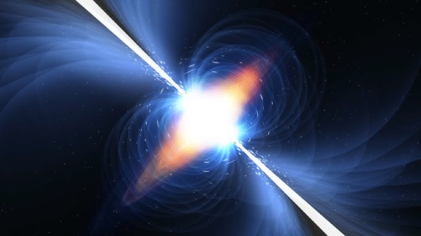

Pulsares
Un púlsar es un tipo especial de estrella de neutrones que gira muy
rápidamente y emite pulsos regulares de radiación electromagnética,
como ondas de radio, rayos X o rayos gamma.
Se llaman púlsares porque su radiación llega a la Tierra en forma de
pulsos muy precisos, como si fueran el tictac de un reloj cósmico.

Origen de los púlsares
- Se forman cuando una estrella muy masiva explota en una supernova y su núcleo colapsa.
- El resultado es una estrella de neutrones extremadamente densa y pequeña (unos 20 km de diámetro, pero con una masa mayor que la del Sol).
- Debido a la conservación del momento angular, giran muy rápido: algunos dan vueltas cientos de veces por segundo.
Características principales
- Rotación rápida → pueden girar entre 1 y 1000 veces por segundo.
- Campos magnéticos intensos → mucho más potentes que los de cualquier imán en la Tierra.
- Emisión en forma de faro → los chorros de radiación salen de los polos magnéticos; si la Tierra está en su trayectoria, vemos los pulsos.
Tipos de púlsares
- Púlsares de radio → emiten principalmente ondas de radio.
- Púlsares de rayos X → detectados en sistemas binarios, cuando absorben materia de otra estrella.
- Púlsares de milisegundos → giran extremadamente rápido, hasta miles de veces por segundo.
Volver al inicio